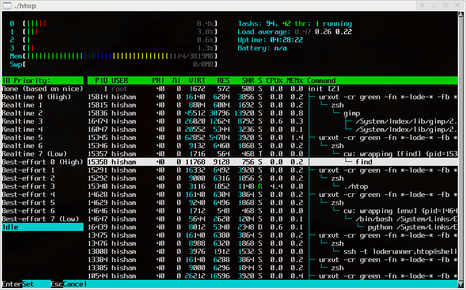
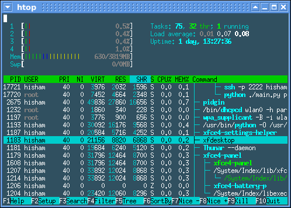
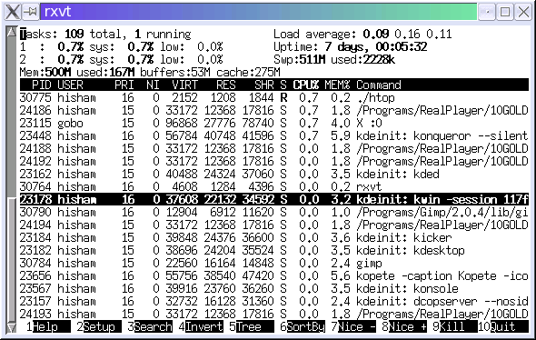
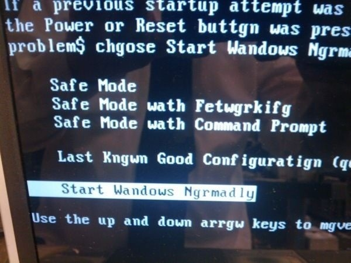
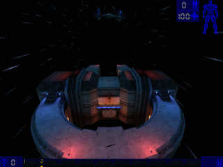
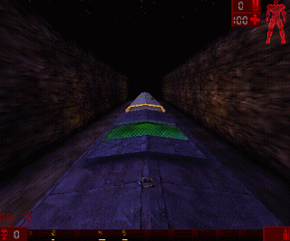
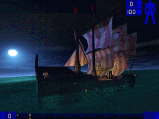
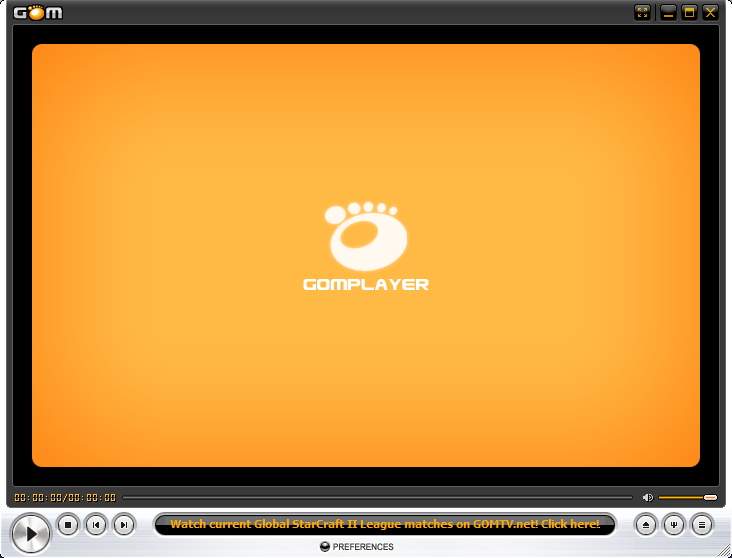

“Every time you feel thirsty or hungry, it’s your body letting you know that you’re beginning to die”
(via /r/showerthoughts)





Please wait the setup process or else you will get a BSOD








Unreal Tournament Maps (Epic Games, 1999) / #



I never really liked VLC and couldn’t get used to KMPlayer either, so GOM was a nice alternative in the AVI era. (Now I use MPC-HC, which is awesome with ac3filter+madVR and also has a nostalgic touch)

“Every time you feel thirsty or hungry, it’s your body letting you know that you’re beginning to die”
(via /r/showerthoughts)


In the film Elysium the space station is rebooted using code taken directly from the Intel Architecture Software Developer’s Manual Volume 3: System Development [pdf].